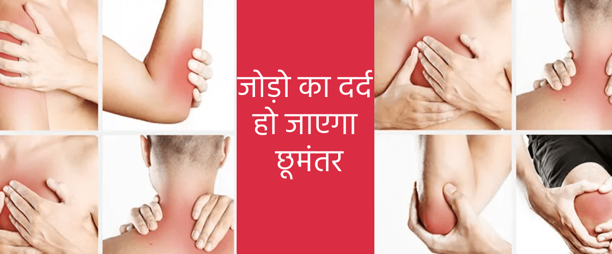
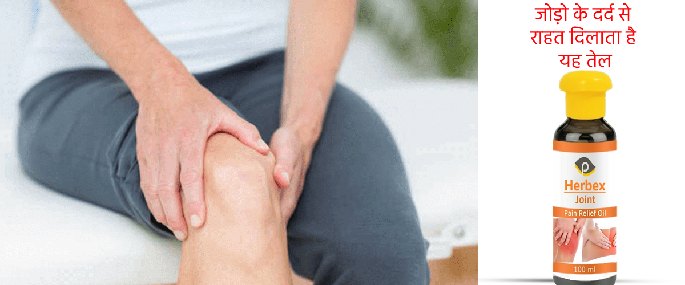
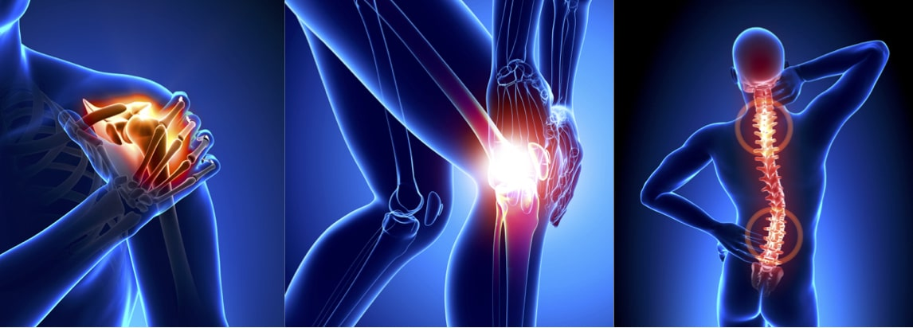
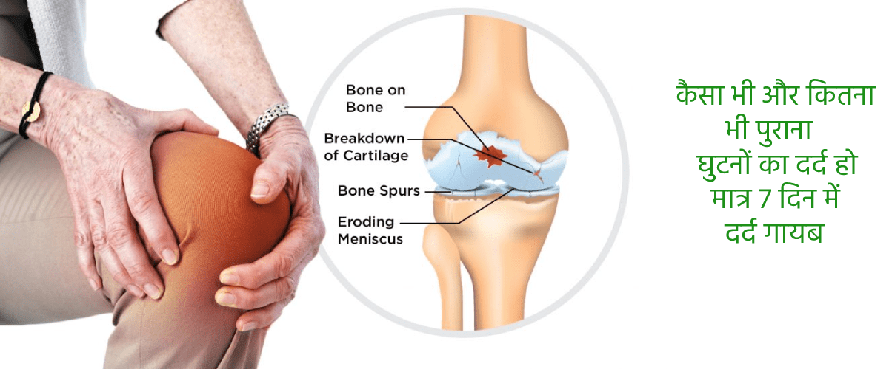

- 43.846
- 13
पुरे जीवन काल में पीठ दर्द या जोड़ों का दर्द नहीं होगा:मिथ्या या सच्चाई?
सुमित त्यागी सुमित त्यागी एक अनुभवी एक्सपर्ट हैं। इन्होने हड्डियों और मसक्यूलोस्केलेटल सिस्टम के इलाज का एक वैकल्पिक तरीका बनाया है जो दवाइयों और कोर्सेट पहनने पर आधारित नहीं है। यह सिद्धान्त मानव शरीर और उसकी क्षमताओं के बेहतर समझ पर आधारित है। प्रैक्टिस का अनुभव: 8 वर्ष से भी अधिक
"ऐसे लोगों पर कतई विश्वास न करें जो आपसे कहते हैं कि उम्र बढ़ जाने पर जोड़ों की बीमारियों का इलाज नहीं किया जा सकता"
सुमित त्यागी जी का कहना है कि वह कुछ ही महीनों में ऑस्टियोकांड्रोसिस के गंभीर से गंभीर मामले को भी ठीक कर सकते हैं। जहां तक जोड़ों के दर्द का सवाल है, यदि उनका ठीक से इलाज किया जाए तो यह 7 दिन में भी ठीक हो सकता है। यह अपनी 8 साल की प्रैक्टिस में कई बार ऐसा करके दिखा चुके हैं। यह हमारा सौभाग्य था कि "हर उम्र में स्वास्थ्य जोड़" टीवी प्रोग्राम के लाइव ब्रॉडकास्ट के तुरंत बाद हमें सुमित त्यागी जैसे बड़े एक्सपर्ट का इंटरव्यू करने का मौका मिला।

इंटरव्यू सुधा चुतर्वेदी द्वारा
नमस्कार त्यागी जी। कृपया हमें बताइए कि क्या यह सच है कि अधिक उम्र के व्यक्ति जोड़ों की बीमारियों और ऑस्टियोकांड्रोसिस से नहीं बच सकते?
हैलो सुधा । यह सच नहीं है। ऑस्टियोकांड्रोसिस को किसी आम बीमारी की तरह ठीक नहीं किया जा सकता। लेकिन अधिकतर ऐसा देखा गया है कि इसके इलाज में देर हो जाती है और वह ठीक से नहीं किया जाता। अधिकतर एक्सपर्ट इलाज उपयोग करते हैं जिससे पेशेंट के स्वास्थ्य पर उल्टा प्रभाव पड़ता है सच तो यह है कि किसी भी उम्र में शरीर की किसी भी हड्डी को ठीक किया जा सकता है।
यदि आपको एक छोटा सा सीक्रेट पता हो और आप थोड़े अनुशासन में रहेंगे तो इस बीमारी को घर बैठे भी ठीक किया जा सकता है। मेरे हजारों पेशेंट मेरी सलाह पर अमल करते हैं।
और ये सीक्रेट क्या है?
वास्तव में यह सीक्रेट तो बहुत ही सरल है। हमें दर्द की जड़ को समझने की जरूरत होती है। आज मेडिकल एनसाइक्लोपीडिया में ऑस्टियोकांड्रोसिस और ऑस्टियोआर्थराइटिस के करीब 150 कारण दिए गए हैं, लेकिन वास्तव में इन सब का परिणाम एक ही होता है। जोड़,रीढ़ की हड्डी और गद्दी की लचक चली जाना, जिससे दर्द होता है। आपको पता है यह क्यों होता है? इसलिए क्योंकि रक्त का प्रवाह ठीक से नहीं होने के कारण ये घिस जाते हैं।
यही तो इसका सीक्रेट है। हम रक्त प्रवाह वापस ठीक करके जोड़ों का इलाज करते हैं।
तो क्या 45 के बाद भी रक्त प्रवाह वापस ठीक करना संभव है?
मैं तो एक कार-एक्सीडेंट के बाद व्हीलचेयर छोड़ने में कामयाब हो गया था, और ये मेरे 45 वें जन्मदिन से कहीं बड़ी चीज थी।
क्या आप व्हीलचेयर पकड़े हुए दूसरे लोगों को भी बचा पाते हैं?
हाँ, बहुत बार बचाया है। लेकिन मेरे अधिकतर पेशेंट 40 साल से ऊपर की उम्र के ऐसे लोग हैं जिन्हें लंबी बीमारी ने पकड़ लिया है। लोग मेरे पास ऑस्टियोकांड्रोसिस ऑस्टियोआर्थराइटिस या रेडिकुलाइटिस जैसी दिक्कतों के साथ आते हैं। ये बीमारियां आदमी को पूरा तोड़ देती हैं और आदमी अपना सामान्य जीवन नहीं जी पाता।
लोग दर्द की शिकायत करते रहते हैं और कहते हैं कि उन्हें चलने में दिक्कत होती है। मेरे कई पेशेंट तो दर्द से रोने लगते हैं और कहते हैं: "आखिर मेरे साथ ही ऐसा क्यों हो रहा है?" " मैंने ऐसा कौन सा पाप किया है कि मुझे यह सजा मिली?" और मैं उन्हें साफ-साफ बताता हूँ: "अब रोना-धोना बंद करो और अपने रक्त प्रवाह को फिर से ठीक करने की कोशिश करो।"
आप इस उम्र में भी रक्त प्रवाह कैसे वापस ठीक कर देते हैं?
अभी कुछ ही दिनों पहले मैंने अपने मरीजों को एक अलग तरीके से ठीक करना शुरू किया है जिसमें 96 शारीरिक एक्सरसाइज होती हैं। यह तरीका बहुत अच्छा रहा है लेकिन दुर्भाग्य से मेरे कई पेशेंट इसे बहुत कठिन पाते थे।
सबके पास जिम जाने के लिए हमेशा समय नहीं होता था। मुझे पक्का विश्वास था कि रक्त का प्रभाव वापस ठीक करने के लिए कोई आसान और ज्यादा मॉडर्न तरीका जरूर होगा, और मैंने उसे ढूंढ लिया।
आप किस तरह के तरीके की बात कर रहे हैं?
मैं एक अनोखे तरीके Herbex Joint Pain Relief Oil की बात कर रहा हूँ। इससे लोग न सिर्फ पीठ और जोड़ों के दर्द को तेजी से भुला सकते हैं, इससे कुछ ही महीनों में सबसे सीरियस मामलों को भी ठीक किया जा सकता है।
इस फार्मूला को बनाने के लिए बहुत इन्वेस्ट करना पड़ा था।
यह जबर्दस्त प्रोडक्ट Herbex Joint Pain Relief Oil काम कैसे करता है?
इसमें कोई चमत्कार नहीं है; यह सरल सा विज्ञान है। Herbex Joint Pain Relief Oil में 35 सक्रिय अवयव है जो पुरानी कमजोर हो चुकी कोशिकाओं को अपने संपर्क में आते ही ठीक कर देता है जिससे वह 10 गुना ज्यादा तेज काम करने लगती हैं। यही कारण है कि कोशिकाएं धीरे-धीरे अपनी ताकत वापस पा लेती हैं।
शरीर की प्रभावित जगह पर Herbex Joint Pain Relief Oil पहली बार लगाने के बाद से ही 93,000 से भी ज़्यादा कोशिकाएँ सक्रिय हो जाएंगी। रक्त के प्रवाह के लिए यह बहुत ही उपयोगी होता है। यह इलाज ऐसे ही काम करता है। इसमें सबसे महत्वपूर्ण चीज यह है कि इसका उपयोग सिस्टमैटिक तरीके से किया जाना चाहिए।
यह प्रोडक्ट तो बहुत ही बढ़िया लग रहा है, लेकिन हम यह जानना चाहते हैं कि आम बीमारियों से ग्रस्त लोगों के लिए इसके क्या मायने हैं?
देखिए इसके मायने ये हैं कि अब पुराने जमाने की दवाओं को अलविदा कहने का समय आ गया है। अब लोग अपनी बीमारी को घर में ही 1-2 महीने में ठीक कर सकते हैं। Herbex Joint Pain Relief Oil सिर्फ एक एनाल्जेसिक नहीं है, यह शरीर को कोशिकीय स्तर पर ले जाकर "रीस्टार्ट" कर देता है, दर्द की जड़ को खत्म कर देता है और जोड़ो तथा रीड की हड्डी को अपनी ओरिजिनल अवस्था में वापस ले जाता है। आपको सिर्फ लक्षणों से ही राहत नहीं मिलती, Herbex Joint Pain Relief Oil से बीमारी की जड़ खत्म हो जाती है।
उपयोग के पहले दिन, Herbex Joint Pain Relief Oil शरीर की पुनर्निर्माण प्रणाली के कार्यकलाप को दोबारा शुरू कर देता है और दर्द से राहत देता है। दो से तीन हफ्तों में इलाज खत्म हो जाता है लेकिन यह ध्यान रखिए कि इस ट्रीटमेंट को दोबारा करने की सलाह दी जाती है ताकि आगे चलकर बीमारी दोबारा वापस ना आए।
क्या Herbex Joint Pain Relief Oil केवल ऑस्टियोआर्थ्रोसिस और ऑस्टियोकांड्रोसिस के इलाज के लिए ही उपयोग की जा सकती है?
नहीं। Herbex Joint Pain Relief Oil से कोशिका के स्तर पर असर होता है और रक्त प्रभाव वापस ठीक हो जाता है। इससे जोड़ों और रीढ़ की हड्डियों की सभी प्रकार की बीमारियाँ ठीक हो जाती हैं जैसे: ऑस्टियोआर्थ्रोसिस और आर्थराइटिस, साइटिका, गठिया, रेडिकुलाइटिस, वर्टेब्रल हर्निया, चोट, फ्रैक्चर आदि। इन सभी मामलों में Herbex Joint Pain Relief Oil का बहुत ही अच्छा असर होता है।
क्या Herbex Joint Pain Relief Oil से ये सब बीमारियाँ ठीक हो जाती हैं या सिर्फ जोड़ों के दर्द में आराम मिलता है?
इलाज के पहले चरणों में Herbex Joint Pain Relief Oil से दर्द में राहत इलती है और बाद में बीमारी जड़ से चली जाती है। मेरे अधितकर मरीजों के लिए Herbex Joint Pain Relief Oil सबसे आसान, सबसे असरदार और सबसे किफ़ायती इलाज है।
ज़्यादातर लोग जानना चाहते हैं कि इसे कहाँ से खरीदा जा सकता है।
हमारे प्रोडक्ट को आप ऑनलाइन खरीद सकते है उसके लिए आपको हमारी ऑफिसियल वेबसाइट पर जाना होगा Herbex Joint Pain Relief Oil
और इसके वैसे कई फायदे हैं। हम इसे बिना किसी मध्यस्थ के सीधे बेचते हैं। इससे रेट कम रखने में मदद मिलती है और रिटेल रेट से 5.5% सस्ता हो जाता है।
हमारा प्रोडक्ट आप हमारी वेबसाइट से ऑनलाइन और ऑफलाइन खरीद सकते है और ये आपको कोरिएर सर्विस से आप तक भेज दिया जाता है । इलाज को घर पर ही खुद किया जा सकता है इसलिए किसी एक्सपर्ट से परामर्श की जरूरत भी नहीं पड़ती। आपको मेरी बात पर पूरा भरोसा करने की जरूरत नहीं है। यदि आपको दूसरी चीजों से तुलना करके देखनी है तो आप उन्हें भी आजमा कर देख सकते हैं। मुझे पूरा विश्वास है कि आपको Herbex Joint Pain Relief Oil से असरदार दूसरी कोई चीज नहीं मिलेगी।
इंटरव्यू के लिए धन्यवाद एक्सपर्ट सुमित जी ! अंत में आप हमारे पाठकों के लिए क्या कहना चाहेंगे?
मैं आपके पाठकों का इस ओर ध्यान खींचना चाहता हूँ कि पीठ और जोड़ों के दर्द आज सिर्फ बूढ़े लोगों की दिक्कत नहीं है। कई युवा लोग भी इससे परेशान हो चुके हैं। यदि आपको बहुत हल्का लेकिन बार-बार दर्द होता हो तो इसे गंभीरता से लेना चाहिए।
और याद रखिए: जोड़ों और पीठ की बीमारियों से सिर्फ दर्द ही नहीं होता, इनसे इन अंगों की उम्र 10-15 साल कम हो जाती है।
नोट: सुमित त्यागी ने पहले 50 खरीदने वालों को Herbex Joint Pain Relief Oil पर खास डिस्काउंट देने का फैसला किया है! और हो सकता है आप किस्मत वाले हों।
19 टिप्पणियाँ
श्याम गुप्ता
जोड़ो के दर्द के लिए बहुत अच्छा प्रोडक्ट है और मेरे लिए बहुत मददगार भी है ।
1राकेश बाबू
क्या बात है मेरा दर्द तो इस जोड़ो के दर्द के तेल को लगाते ही गायब हो गया। एक्सीलेंट प्रोडक्ट
2अशोक अवस्थी
अच्छी क्वालिटी है और अच्छा प्रोडक्ट है।
3रजत तिवारी
मेरे लिए सबसे अच्छा जॉइंट के दर्द का तेल है ।मुझे यह बहुत ज्यादा पसंद है।
4सोने लाल
आप इस प्रोडक्ट को पूरे विस्वास से खरीद सकते हैं। कोई साइड इफेक्ट नहीं है । वास्तव मे बहुत अच्छी क्वालिटी है।
5हर्षित
उपयोग करने में बहुत आसान है ..इससे अच्छा प्रोडक्ट मैंने कभी नहीं देखा है ..वाह!
6राम
मैंने अपनी रीढ़ की हड्डी के निचले हिस्से और घुटनों के दर्द के लिए Herbex Joint Pain Relief Oil आर्डर किया था। मेरी किस्मत खराब थी कि मुझे डिस्काउंट नहीं मिला क्योंकि डिस्काउंट वाले प्रोडक्ट बहुत जल्दी बिक गए थे। लेकिन इसके रिजल्ट्स ने मुझे आश्चर्य में डाल दिया। हड्डियों और जोड़ों की मेरी पूरी की पूरी बीमारियाँ गायब हो गईं। Herbex Joint Pain Relief Oil खरीदने के पहले मैं लगातार 2 साल से दर्द से बहुत परेशान था।
5तुलसी कुमार
ठंड में हमेशा मेरे जोड़ों में बहुत दर्द रहता था। मैंने इंटरनेट पर Herbex Joint Pain Relief Oil के बहुत अच्छे रिव्यू पड़े थे और इसलिए इसे आर्डर करके देखा। मुझे इससे कुछ खास उम्मीद नहीं थी लेकिन ट्रीटमेंट शुरू करने के एक दिन बाद से ही मुझे बहुत अच्छा महसूस होने लगा! मैं ज्यादा एक्टिव हो गया था लेकिन मेरे जोड़ों में दर्द नहीं हो रहा था। मैं तो इसकी पूरे दिल से सलाह दूंगा।
8लता
मैंने अपने पति के लिए दो महीने पहले Herbex Joint Pain Relief Oil का ऑर्डर दिया था। उन्हें बहुत भयंकर पीठ दर्द हो गया था लेकिन अब बहुत आराम मिल गया है। मुझे बहुत राहत मिली है।
7मुख़्तार
मुझे आज Herbex Joint Pain Relief Oil डिस्काउंट पर मिल गया। डेलीवरी का इंतज़ार है)
1महेंद्र गोसाईं
मेरे ऑफिस के एक आदमी ने Herbex Joint Pain Relief Oil लिया था और मुझे भी पैर दर्द के लिए लेने को कहा था। उसके पैरों में भी पहले दर्द रहता था लेकिन मैंने देखा था कि उसने लंगड़ाना बंद कर दिया था। इसलिए मैंने खुद Herbex Joint Pain Relief Oil अपने और अपनी मम्मी के लिए ऑर्डर करने का फैसला किया क्योंकि कुछ टाइम के लिए डिस्काउंट मिल रहा था। थैंक्स)
3सानिका राणे
मैंने पिछले 5 सालों में कई क्रीमें, पैच और गोलियां लेकर देखीं हैं लेकिन एक भी चीज से जोड़ों के दर्द में कोई फायदा नहीं हुआ। किस्मत से मेरी बहन ने एक दिन मुझे Herbex Joint Pain Relief Oil लेने को कहा, इसके बाद तो मेरे जोड़ों का दर्द गायब ही हो गया।
9अनामिका कुमारी
बहुत बढ़िया इंटरव्यू है। मैं भी ऑर्डर कर रही हूँ।
11जगदीश नेमा
बहुत जबर्दस्त चीज है! अभी 1 हफ्ता हुआ है बस और बहुत फायदा हुआ है।
13प्रीति शिवहरे
मेरी बेटी ने मेरे लिए Herbex Joint Pain Relief Oil ऑर्डर किया था। मुझे इन चीजों में एक परसेंट का भरोसा नहीं है, लेकिन अब मानना पड़ेगा कि Herbex Joint Pain Relief Oil से अच्छी कोई चीज नहीं है।
7निर्मल जैन
मैंने एक हफ्ते पहले ऑर्डर की थी लेकिन कल ही मिली। पेमेंट डेलीवरी के बाद करना पड़ता है। मैं कल से ही उपयोग करना शुरू कर दूँगी।
2पंकज तिवारी
मैं पूरी जिंदगी पीठ के दर्द से परेशान रहा हूँ। यह हमारे परिवार में ही है। मैंने कई तरह के हड्डियों के फिजियोथैरेपिस्ट और हकीमों वगैरह को भी दिखाया है। पिछले कुछ सालों में तो मैं अपने जूते की लेस तक नहीं बांध पा रहा था। मैंने Herbex Joint Pain Relief Oil के बहुत अच्छे रिव्यू पड़े थे लेकिन पता नहीं क्यों इसे तुरंत आर्डर करने में डर सा लगता था। आज सोचता हूँ कि काश इसे और पहले उपयोग करना शुरू कर दिया होता तो कितना अच्छा होता। मेरी पीठ ऐसी अच्छी 17 की उम्र के बाद पहली बार लगी है! मैं तो हर एक व्यक्ति को Herbex Joint Pain Relief Oil की सलाह दूंगा।
3रश्मि सिरमौर
मैं पिछले 3 साल से पीठ का इलाज करवा रही हूँ। उम्मीद है Herbex Joint Pain Relief Oil से ऑर्डर मिल जाएगा। मैंने ऑर्डर किया और फोन पर लड़की ने मुझे सब ठीक से समझा दिया। अब मैं पैकेज का इंतज़ार कर रही हूँ।
12दिनेश गजभिए
मैंने तो डिस्काउंट में ऑर्डर ले लिया था। फोन पर लड़की ने बताया कि डिस्काउंट में कुछ ही पीस बचे हैं। यदि पैसे बचाने हों तो जल्दी करें!
5